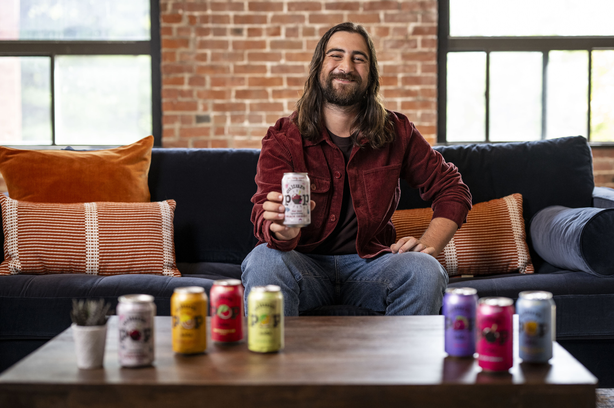
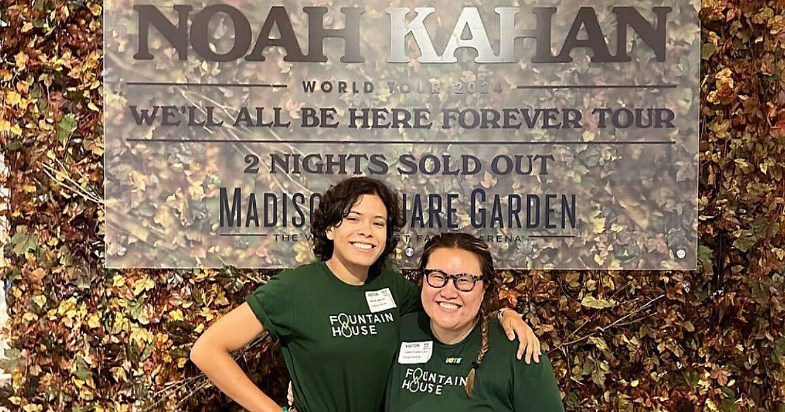
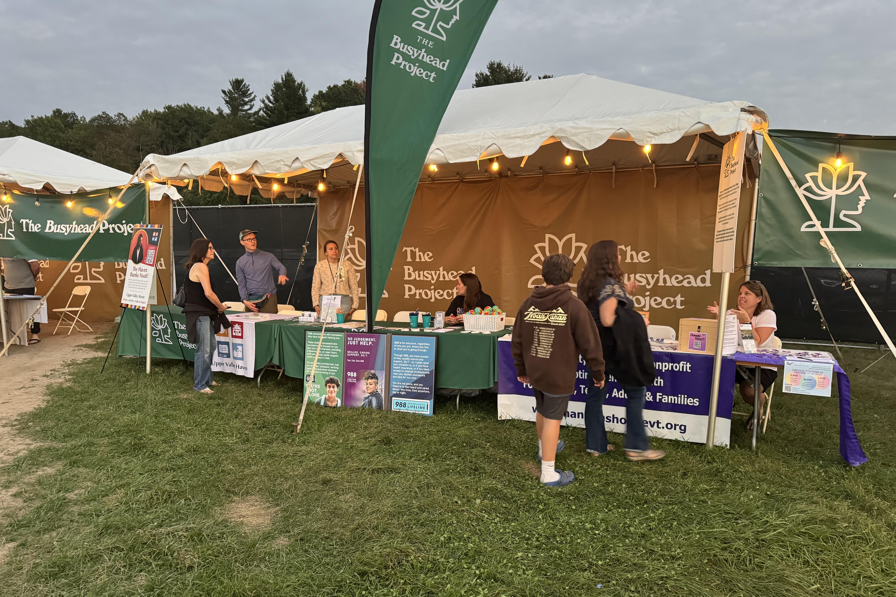
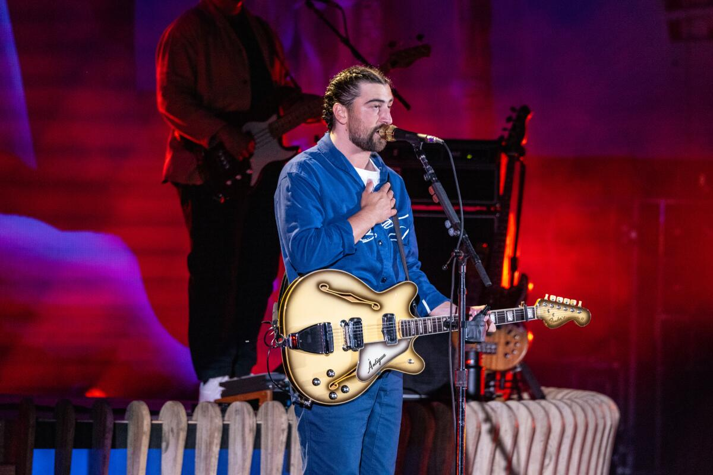
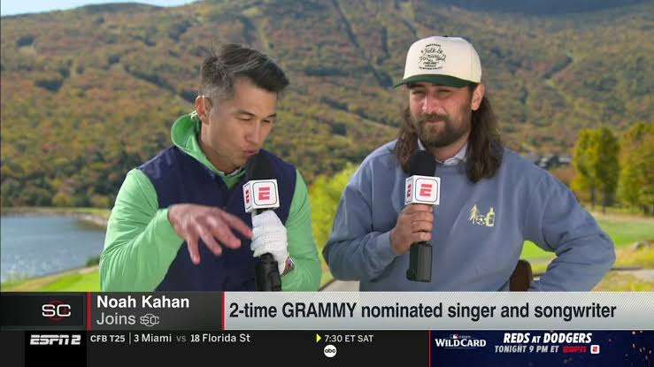

The Busyhead Project

Kahan has openly discussed his experiences with anxiety, depression, obsessive-compulsive disorder, and body dysmorphia. In 2023, he launched the Busyhead Project, a non-profit mental health initiative. The organization aims to end stigma around mental health concerns and improve accessibility to resources. He has also released documentaries and songs discussing his struggles with mental health.
The Busyhead Project
Governor Phil Scott of Vermont proclaimed Thursday, September 19, 2024, as "Noah Kahan's Busyhead Project Day" in Vermont. Kahan founded the Busyhead Project as an initiative to provide resources and information to Vermonters struggling with mental health issues. He performed a sold-out benefit concert that night and all proceeds went to Vermont-based mental health organizations. In 2025, Kahan performed at the Glastonbury Festival in Britain.




